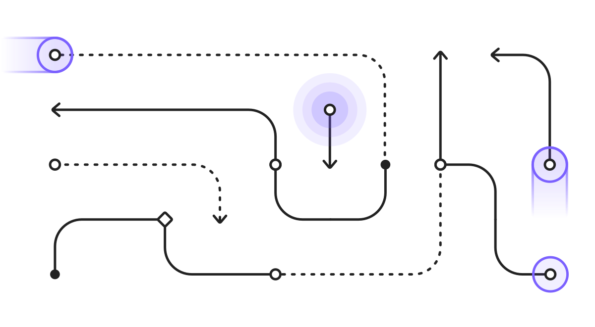

Upon purchase you'll receive a link to download your .zip file containing .sketch, .fig, and .xd files—as well as your Figma plugin license key.
🏫 Student or Teacher? Get an educational discount.
User flows right inside your favorite design tool.

Works where you work
Flowkit was uniquely designed for Figma, Sketch, and XD using best practices and workflows for each individual platform.


Intelligently-named components and file structure.
New Figma Plugin
Flowkit’s been supercharged inside of Figma. All of the components can now be dynamically placed for an even faster workflow. Watch a demo.


Tiny flow components now included for annotating subtle details

Used by top design teams and a whole lot of designers.

Dropbox Design
@dropboxdesign
Flowkit - new @sketchapp library for user flows, content maps, screen annotations, and more—made by @mds

Zack Onisko
@zack415
The @Dribbble team just all got set up with the new Flowkit for @figmadesign. Such a rad library!

Dan Mall
@danmall
Props to my man @mds for making Flowkit so easy to use to make diagrams...

Kristie Clementine
@kristirspbrry
I just bought Flowkit 2.0 for Figma and Sketch by @mds. This is gonna save so much time when I need to make user flows.👌 https://useflowkit.com

Rolando Mathis
@rolomathias
Had the privilege of trying Flowkit a few days ago, and it was 🔥. Exceeded expectations. This lowers the barrier to making informative flows.
Finely-tuned for individuals and teams.
Pro
$49
- Full Flowkit library
.sketch.fig.xd- Figma plugin access
- 1 year of updates
- Unlimited projects
- 1 license
Team
$199
- Full Flowkit library
.sketch.fig.xd- Figma plugin access
- 1 year of updates
- Unlimited projects
- 5 licenses

ZEIT
@zeithq
Flowkit helps you create fast user flows within @sketch and @figmadesign. Learn how @mds was able to effortlessly launch Flowkit to thousands of designers worldwide with ZEIT Now.

Jad Limcaco
@jadlimcaco
Just purchased Flowkit from @mds. Go do the same. Never have to draw those snake lines and arrows for user flows again. 🙌👍

Joel Beukelman
@_bklmn
I can’t stop clicking. Also, go purchase Flowkit & follow @mds…you prob already do.

Sonali Agrawal
@sonaliagrawal
🔥 I just bought this kiiiiiilller Sketch Flowkit by @mds

Erik D. Kennedy
@erikdkennedy
Flowkit by @mds is the arrows functionality Sketch should've shipped with. Brilliant stuff.

Charlie Waite
@charliecwaite
This is so good @mds useflowkit.com 👍 #tinybeerscheers

Veerle Pieters
@vpieters
Flowkit is a completely reusable Sketch library with over 200 symbols that you can summon for every new project, and feel confident that every variation of tap, flow, and UX blurb is covered.

Jeff H
@IsThatJeff
Forgot to send a shoutout to @mds and Flowkit. Saved me on a deadline right before Thanksgiving...would've taken me triple the time without it. AND it's incredibly extendable as you can see.

Cliff Seal
@cliffseal
An order of things: 1. @mds releases a new thing. 2. Everyone at @SalesforceUX talks about it in Slack. 3. I talk about how much I ❤️ @mds. Today’s step #1: useflowkit.com

Nick Reynolds
@Nick__Reynolds
Been using Sketch FlowKit for a day now and it's doubled my UX flow production speed. How nerdy can a tweet get! Go buy it and be just as nerdy!

Startup Weekend Charleston
@SWCharleston
Flowkit for @Sketchapp, by @mds, has GOT TO BE in your Sketch toolbox for designing User Flows. Get it here useflowkit.com

Jason
@fnkick
Just bought this great Sketch Flowkit by @mds—look forward to the time-savings!

Greg Becker
@gregbecker
Picking up this little gem for @eBay Design today. Go get it...Matt is a beast. @mds

Kris Puckett
@krispuckett
🔥 All of the excitement for buying and using Sketch Flowkit by @mds

Nate Shevlin
@NateShevlin
Just bought this sweet Sketch Flowkit by @mds http://sketchflowkit.com Excited to save some serious time creating logic flows. 🔥

Kevin Clark
@vernalkick
Flowkit by @mds is a great way to quickly mock up user flows in Sketch. Make sure to check out the video!

Arantxa Vizcarro
@ArantxaVizcarro
Flowkit for Sketch!! Bonito y rápido! ;) #design #process #flow #life #megalike #good Gracias @angelcreative!!

Zen Lara
@tobamese
I just bought Flowkit 2.0 for Figma and Sketch by @mds. This is gonna save so much time when I need to make user flows.👌 https://useflowkit.com

Kamal Nayan
@kns008
Flowkit by @mds is a delightful utility. How much do I love these thoughtful little things that aren't trying to 'change the world' but do what they are supposed to do.

Abigail Readey
@readeyful
Stoked to try out @mds flow and annotation tool. 🤙 If anyone has any favorite processes on how to best communicate designs to developers and clients I'd love to hear them! https://useflowkit.com

James Ledford
@jamesledford
Flowkit 2.0 by @mds just launched. Now in native @figmadesign ! You need this ... get it now—https://useflowkit.com

Jess
@JesJiang
Designing flows all day everyday with @mds Flowkit! Best flow tool for designing in sketch. #uxui #design

Dan
@Betraydan
🔥💎🔥 Sketch flow kit by @mds this is super useful. https://sketchflowkit.com/ #design #sketch #flow

Dominic
@domenico_loia
Awesome work by @mds on this kit, super useful ✨⚡️ useflowkit.com

Chris Messina
@chrismessina
This is super dope for anyone that designs UI flows in @sketchapp!

Luke Chen
@LukeChen_UX
Flowkit still rocks. I have created several diagrams using FlowKits. Kudos to the person behind: @mds! https://useflowkit.com

Joshwin Greene
@Josh_w_G
🔥 I just bought this kiiiiiilller Sketch Flowkit by @mds